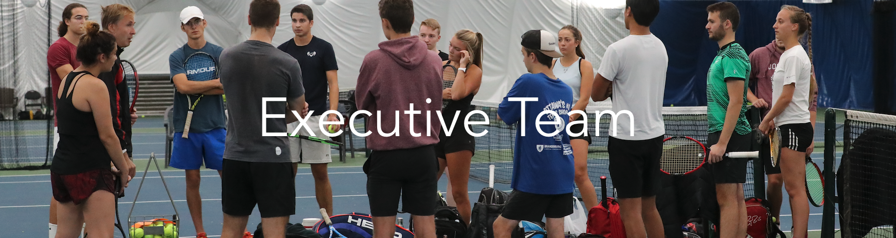

The University of Ottawa Tennis Club Executive Team is composed of ten current or alumni uOttawa students. They are passionate and work hard into growing, improving, and promoting the University of Ottawa Tennis Club (UOTC). Each person on the Executive Team holds a respective role: President, Treasurer, Communications, Marketing, Website Development, Male & Female Captains and the Division 2 & 3 representatives.
Meet the Team

Miteau Butskhrikidze
(President)
Miteau started playing competitive tennis at the age of ten and quickly fell in love with the sport. He coached at the Wychwood Tennis Club in Gatineau for several years while in high school and university. It made him appreciate the effort that goes into supporting a tennis club and all its players.
Miteau graduated from the uOttawa with a dual degree in political science and law (J.D.) in June 2023 and is currently an articling student at Norton Rose Fulbright in Ottawa. He remains a tennis player at heart and is happy to head the UOTC in an administrative capacity

Nickon Bostandoustnik
(Treasurer)
Nickon is a finance student at uOttawa. He plans on obtaining his financial risk management certificate as well as going to law school post-graduation. He aspires to become a corporate lawyer working with finances. When offered the position as treasurer for the UOTC, Nickon saw this as a great opportunity to work on club finances as well as work with numbers which is one of his strengths. Nickon fell in love with tennis during the summer of 2022 when he was asked to play with one of his friends. He plans on improving his level competitively to the best of his abilities.
Estefania Zaragoza Pedroza
(Social Media)
Estefania is a nursing student at uOttawa and is the social media executive of the UOTC. Her role in the team is to manage social media platforms to both promote the team and answer questions from potential or current members.
She believes her extroversion is the main reason why she got chosen as a Social Media Executive. For her, clear communication is always a key elements to maintain integrity within a team, and she intends on doing her very best to improve it.
Mathis Doyon
(Communications)
Mathis is a human kinetics (BScHK) student at uOttawa and is the UOTC's communications executive. He is a division 1 player for the Gee-Gees team and his role in this club is to answer questions and contact other schools regarding competitions.
He took on this role as involvement is essential for him. He wants to help the club and the team grow. He believes that his commitment and ability to communicate in 3 languages and bring another cultural aspect to the team will help him excel in his position.
Joel Scully
(Marketing)
Joel is the UOTC's marketing executive and is responsible for developing and executing marketing strategies that increase the program's visibility, engagement, and success. Joel is studying Human Kinetics at uOttawa and has been playing tennis from a young age.
Joel is a very dedicated leader of the club, and is known for being outgoing and having a positive attitude. He loves the sport of tennis and has competed in UTR, and OTA tournaments around the city and province. His goal is to grow the sport of Tennis in Canada at all levels of play.

Céline Wan Min Kee
(Web Developement)
Céline is a Computer Science student at uOttawa. Her role is to maintain the UOTC's website and maximise the user experience of the website. She works closely with the Communications Executives to ensure that the website provides up-to-date and relevant information of the club.
She believes that a presence online helps the team get better exposure and promotes the club. Céline began playing tennis at the age of 8 years old and started competing in tournaments at 10. She was ranked number 2 in her category nationally and was part of the Mauritian Junior National tennis team.

Francesca Nitica
(Female Captain)
Francesca is the captain of the women's team, and is studying Business Technology Management with a minor in Mathematics. She began playing tennis at the age of 14 and quickly became passionate about the sport. She enjoys taking leadership and supporting and encouraging her peers.
Francesca also coaches tennis to kids and teens at summer and spring camps. She has always enjoyed helping others and is enthusiastic about encouraging children to enjoy tennis and build a love for the sport.

Ethan Leong
(Male Captain)
Ethan is the captain of the men's team and is a student of Human Kinetics. His heart belongs to the sport of tennis and is ultimate goal is to emerge victorious in every match he competes in at tournaments. To achieve this ambition, Ethan dedicates himself to playing tennis month after month, recognizing the value of consistent practice.
Among his repertoire of shots, Ethan's absolute favorite is the forehand volley.
Giorgio Sawaya
(Division 2 & 3 Male Representative)
Giorgio, currently studying software engineering, actively gathers feedback from Div 2 & 3 members and assists during practices in the absence of usual coaches. With a long-standing recreational interest in tennis, he's now eager to elevate his game by joining the club. He believes in constant engagement for growth which is why he is very adamant on making sure everyone is well-integrated into the club. He pushes for drills that most members find demanding and rewarding to allow the participants to make real progress with their tennis skills.
Sofia Christow-Filleul
(Division 2 & 3 Female Representative)
Honorable mentions

Ryan Zanganeh
(Former President)
Ryan is the Former President of the University of Ottawa Tennis Club. Since starting tennis at the age of six, he has been training, competing, and teaching kids & teens how to play tennis. Having dedicated over 14 years of his life to the sport, Ryan realizes the substantial positive physical and mental impacts playing tennis can have on a person’s life.
He has done a TedTalk on Crohn’s Disease and is currently completing a post-operative rotator cuff recovery protocol. Ryan is pursuing a career in dentistry with interests in Pediatrics and Oral Surgery specialties.

Sara Zeineddine
(Former Communications Executive)
Sara is the Former Communications Executive of the uOttawa tennis team. She was very invested in promoting the UOTC, especially on social media. Sara speaks four languages such as French, English, Spanish which was a great asset for the Communications position.
She has been playing tennis since a very young age. She’s always shared her love for tennis, to family, friends and even strangers. She competed as well both nationally and internationally. She also played and competed for several years in UP Club in Cornella de Llobregat and Academia Sanchez Casal in Barcelona, Spain.

Luka David
(Former Web Developer)
Luka is former Web developer for the UOTC. Before coming to uOttawa, Luka competed mainly in the United States while going to school in Windsor, Ontario. He began coding in grade ten and after fast tracking a few computer science classes and participating in a few hackathons.
Luka is an avid tennis fan, passionate player and patient coach. He had pitched the idea to make the website to the executive team, and had made a personal goal to help the team in all aspects, not just technical ones. His goal was to bring up the reputation of the university both on and off the court.